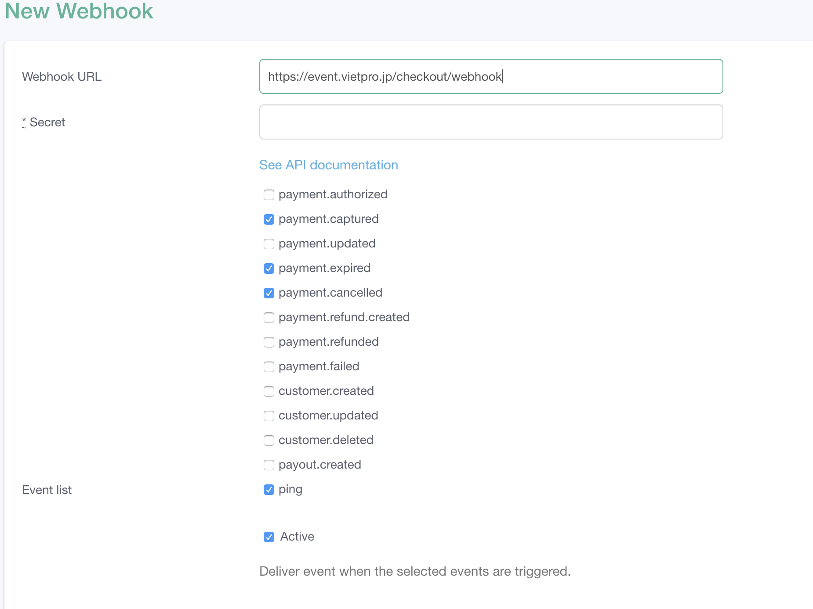

Flow checkout and payment of Komoju
This flow is for checkout event
Flow checkout
Checkout by
Redirect user to Komoju page:
Currently we don’t split between credit and convenience store
Prepare payment data before redirect
Payment type :
* credit
* combini
The info below should be set
EventCheckoutController@postCreateOrder
// Redirect when success
transaction[return_url] => route('showEventCheckoutPaymentReturn', ['event_id' => $event_id, 'is_payment_successful' => 1]),
//Redirect when error or user cancel payment
transaction[cancel_url] => route('showEventCheckoutPaymentReturn', ['event_id' => $event_id, 'is_payment_successful' => 1]),
-> for example :
* if payment is ok, the link below will be accessed
http://event.vietpro.jp/e/{event_id}/checkout/success?is_payment_successful=1
* if payment is failed the link below will be accessed
http://event.vietpro.jp/e/{event_id}/checkout/success?is_payment_cancelled=1
According to Komoju, both of the route above will call this method:
EventCheckoutController@showEventCheckoutPaymentReturn
Capture the redirect from Komoju:
Komoju will redirect to the url above with the data below
(Remember to verified the http referrer to ensure that the request is from Komoju - or do double checking with Komoju API)
As the request will be redirected to checkout/success we only check for the transaction[status]: {status} data
status: captured -> user has paid for the ticket
status: authorized -> user hasn't paid for the ticket
status: cancelled -> user cancelled
Status = captured (User has paid for the ticket)
- A Ticket will be generated and sent via email to user
- An order with status *1* (will be created)
- Total Sales, events vacancies will be updated
Status = canceled (User don’t paid for the ticket)
- Redirect user to homepage
Status = authorized (User issued a convenience store payment request)
- An order with status *5* (on hold) will be created
- order.status = 5
- order.transaction_id = callbackのexternal_order_num (for identified the order when a
payment.capturedhook is invoked)
Confine payment web hook
Should be configured on Komoju side and call back to VPJ like this
Refer the screenshot below

* Webhook Url will subscribe to these events
* captured: user completed the payment,
* expired: the payment is expired , we should clear up the hanging order
* cancelled: user cancelled when going to the convenience store
* Secret: the secret key should be set to authenticated the request come from Komoju not from hackers. (VPJ’s web hook should validate these secret before any processing)
checkout/webhook
This API is similar with this method
EventCheckoutContrller@showEventCheckoutPaymentReturn
it should contains these process:
* complete the order
* update from status 5 -> 1
* send email to user to inform they have completed the payment